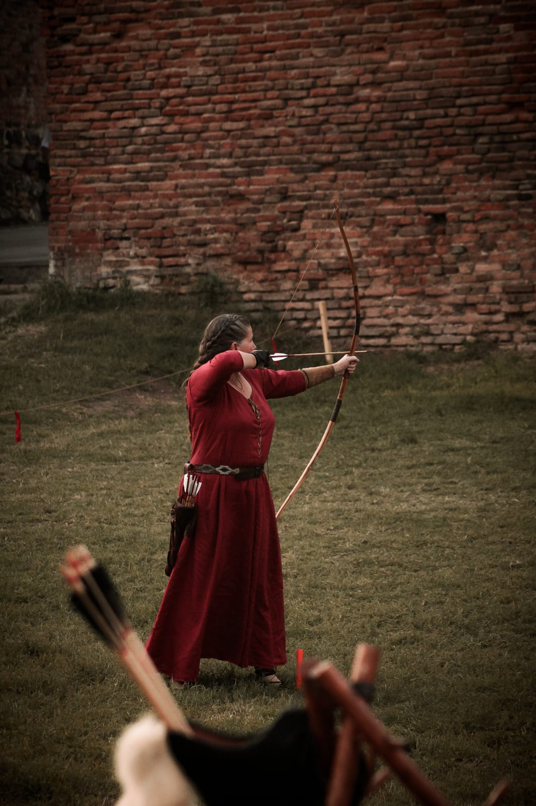

La leggenda vuole che la vallata di Braies fosse abitata da alcuni selvaggi di brutto
aspetto
che
custodivano l'oro presente nelle vicine montagne. Per queste figure l'oro era prezioso per il
suo
Esta foto pude tomarla a fines del otoño del 2022 en una hermosa tarde Italiana y el
precio es de $10
 España alberga una naturaleza inusual, desconocida y atípica que tiene que ser descubierta. Lugares
cargados de belleza, donde se mimetizan las leyendas y toda clase de misterios formando parte de la
Esta foto pude tomarla a fines del otoño del 2022 en una tarde lluviosa mientras recorria el camino
de santiago y el precio es de $10
España alberga una naturaleza inusual, desconocida y atípica que tiene que ser descubierta. Lugares
cargados de belleza, donde se mimetizan las leyendas y toda clase de misterios formando parte de la
Esta foto pude tomarla a fines del otoño del 2022 en una tarde lluviosa mientras recorria el camino
de santiago y el precio es de $10

La historia Italiana nunca se cansara de mostrarnos y contarnos distinas partes de su historia.. En
un evneto anual, cada verano en la ciudad de Montagnana se realiza un simulacion de la toma de la
ciudad, en una batalla mitica de la epoca, como asi tambien nos demuestran carreras y competencias
de arqueros entre otros...
Esta foto la tome en este evento mitico italiano, en la competencia de tiro con arco y flecha y el
precio es de
$10
 Jugando con efectos, elementos y relfejos, pudimos realizar magicas fotos dentro un
estudio, la
imaginacion no tiene limites, creemos juntos!..
Esta foto la tomamos en el estudio de Claudia una gran amiga de Brujas y su precio es de $10
Jugando con efectos, elementos y relfejos, pudimos realizar magicas fotos dentro un
estudio, la
imaginacion no tiene limites, creemos juntos!..
Esta foto la tomamos en el estudio de Claudia una gran amiga de Brujas y su precio es de $10
Primero lo primero. Si vas a Amsterdam, no te podés perder de un paseo por sus lindos canales. En
Europa le dicen la “Venecia del Norte” por la gran cantidad de canales que atraviesan la ciudad.
Esta es una gran oportunidad para recorrer y conocer la ciudad desde otro punto de vista.
Amsterdam!!! una de mis ciudades favoritas!!!... Hermosas fotos tomadas en este hermoso
verano 2022 y
su precio es de $10